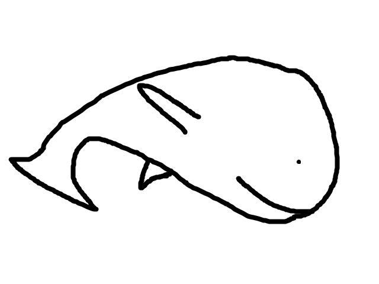
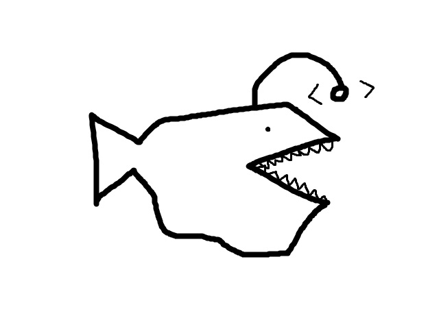

Intertidal Zone
up to 10m below sea level
The intertidal zone is the first of five benthic zones.
It is also part of the first oceanic environment (the neritic zone.)
There are some animals here, like a sea anemone, or a rock.
I don't have too much room to say things here, this layer is kinda short.
I suppose, here's a tip: look at the scrollbar. You'll need it.
Also, I'll have some messages here and there. Look out for those.
Have fun!
Sublittoral Zone
up to 200m below sea level
The second of the five benthic zones.
About the pelagic environment, it's also the last part of the neritic zone.
Climate's pretty consistent here.
You're halfway between the Sublittoral Zone and the Bathyal Zone.
Just thought you'd like to know.
Unless you're doing that middle-mouse-click super-fast scroll.
Here's a nice image of a coral.
They live in the sublittoral zone.

{kind=link}
Turns out 190 centimeters isn't a lot of scroll time.
Bathyal Zone
up to 4000m below sea level
On the topic of the pelagic environment, this is where the oceanic zone starts.
Have you noticed the background slowly getting darker and darker?
If you did notice... you have really good eyes. I barely even notice.
There's almost no light here.
Oh, and if you're wondering, you're about 1.93% of the way to the bottom.
This is the second longest layer.
Good luck with that.
Did you know that sperm whales dive into the Bathyal zone for food? Here's a drawing of one.

It's really cold here, about 4 degrees Celcius (39 degrees Farenheit) here.
Not ideal for a rave.
In the original version of this, I mentioned the vampire squid.
It was a red squid that lived in this layer.
(It still does live in this layer)
It looks something like this.

{kind=link}
Pretty neat, huh?
See ya in another few hundred centimeters.
You've scrolled about 2100cm in total.
You're about halfway through the Bathyal Zone.
It's quite deep.
Here's a short list of animals that live in the Bathyal Zone that I haven't mentioned yet.
See? I said it was short.
It takes up a centimeter or two.
Which is <1% of this layer.
This layer just keeps on going, huh?
How are you doing?
I hope I got your attention with this big text.
Enjoying this so far?
No?
Darn.
You're almost at the Abyssal Layer.
Abyssal Zone
up to 6000m below sea level
Well, this is the second to last Benthic Layer. Without an ocean trench, this is about as deep as you go.
This layer isn't the deepest (the Hadal Zone is, followed by the Bathyal Zone)
But it covers the most land.
I felt like you should know that.
Halfway point.
So, I feel like now is a good time to talk about animals.
An example? An Anglerfish! They're carnivorous, and the glowing thing on their head is used to lure prey.
Here's a drawing of it.

You know what else lives in the Abyssal Zone?
Oh, and crabs.
Hadal Zone
the deepest point of the ocean
The hadal zone can only be found in trenches.
The remaining part of this goes down Challenger's Deep, the lowest part of our Earth's hydrosphere.
If you've scrolled this far, congratulations, and sorry.
You're halfway through the Hadal Zone.
Well, a little more now.
I'm surprised you actually decided to scroll this far.
Don't worry, the result will be underwhelming.
You're crazy.
Unless you skipped to the bottom, in which case, shame on you.
But if you scrolled this far, thanks for joining me on this journey.
It was fun to program, and I hope you got some enjoyment out of it.
I hope you see how deep the ocean is now.
Again, thanks for joining me on this "adventure" of sorts.
I hope you enjoyed,
have a good.
-Andy Chan, 2019
Maybe check out the credits or the source code?